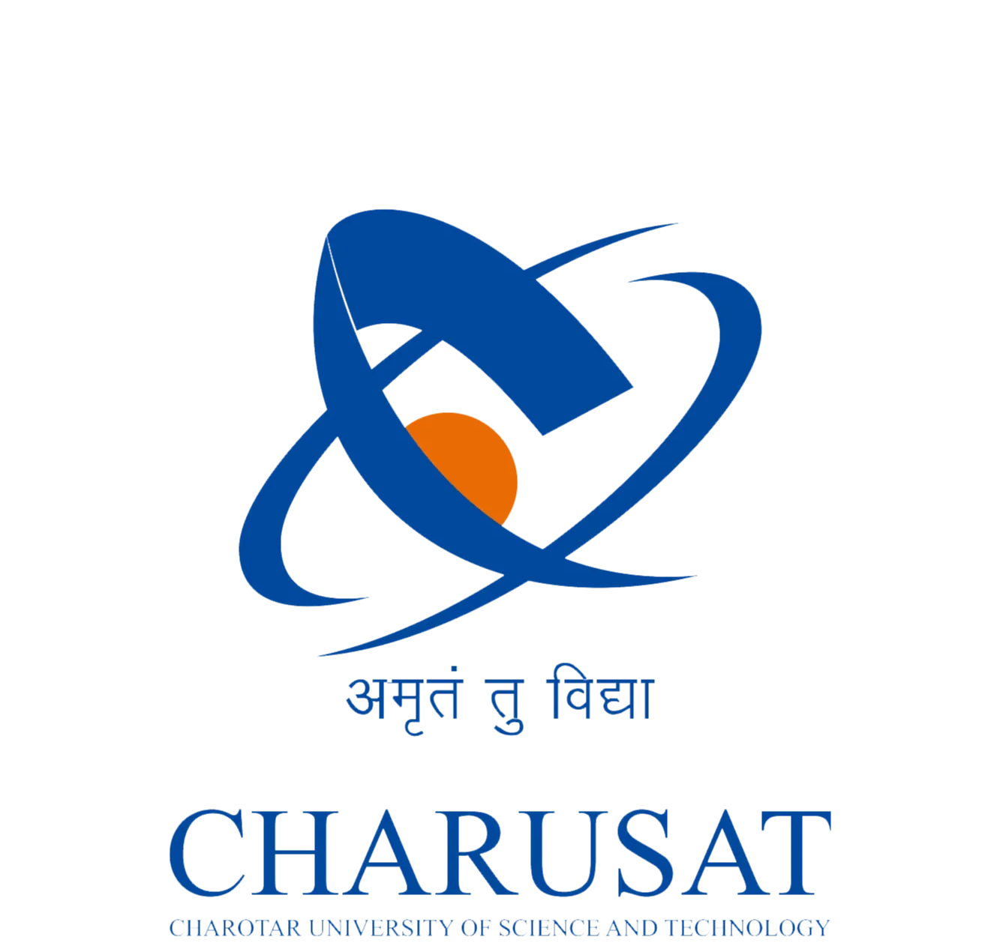
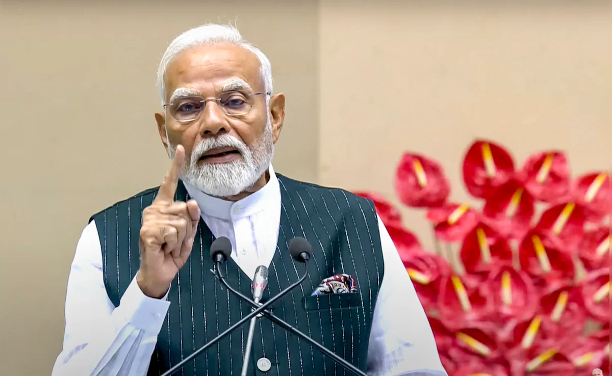

।। अमृतं तु विद्या।।
About CHARUSAT
- NAAC A+ Accredited University
- Ranked among Top 3 Universities in Gujarat by GSIRF
- Member of United Nations of Academic Impact
- Achieved Q2 Innovation Rank in 110th IND SCimgGO Institutions Rankings
- Ranked among Top 200 University by NIRF
HIGHLY CHERISHED BY STUDENT WORLDWIDE
Mission and Vision
See What They’ re Saying...

" CHARUSAT is indeed a Golden Truth of Gujarat. "
Shri Naredra Modi
Hon. Prime Minister of India

" I am happy to know that CHARUSAT has a goal set for mission of social uplifment
with components of knowledge acquisition and imparting education. "
Dr A P J Abdul Klalam
Former President of India & Architect of Missile Programme of India.